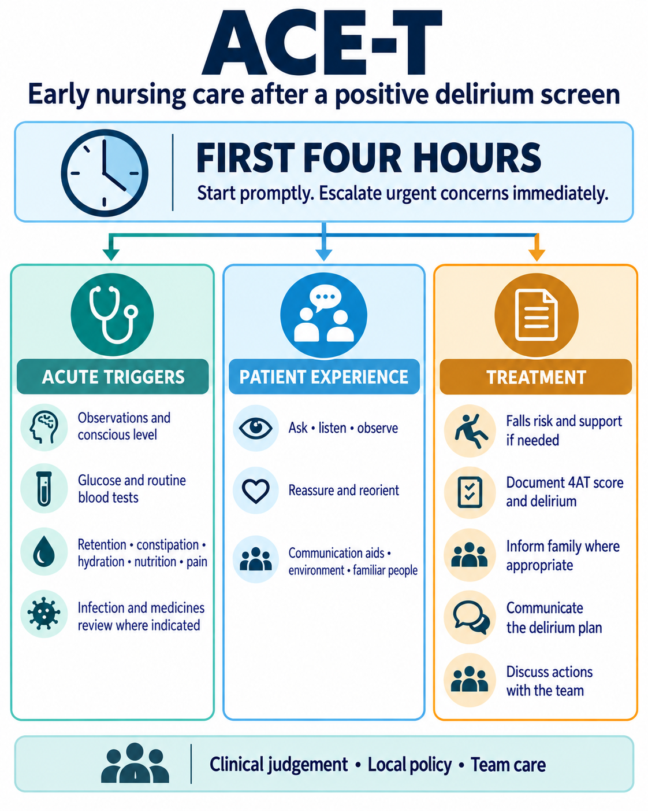

Keep the essentials close
Resources & evidence
An overview to share, a bedside guide to print, and the background to ACE-T.
ACE-T resources
A one-page overview
The ACE-T infographic
A concise visual summary of the three domains and the first four hours. Use the bedside guide for the fuller nursing prompts.
{kind=link}
Text is also available in the accessible bedside guide.

Printable bedside guide
The three domains, action prompts and escalation advice. Use your browser’s print option to print or save a PDF.
Development & evidence
ACE-T was developed by clinicians to give nurses a practical starting point after delirium is detected. Its three domains bring together acute triggers, patient experience, and treatment and communication.
The developmental pilot involved teams in Edinburgh, Frankfurt and Stanford. It examined staff views and clinical documentation before and after introduction. Feedback informed the revised nursing prompts and the four-hour target.
The evidence is preliminary. Staff feedback was encouraging, and delirium documentation was more frequent after introduction. The pilot was small and non-randomised; it did not establish an improvement in patient outcomes or test completion within four hours.
The source for this website
Cours A, Trabert J, Higgins M, Saleem U, Sampson E, Storr-Street N, MacLullich A.
Development and pilot evaluation of ACE-T, a nurse-focused delirium initial-response tool, across three health systems.
Current manuscript for submission; version reviewed September 2026. The manuscript, including its revised tool in Table 1, is the source of authority for the ACE-T content here. A publication link will be added when available.
The web guide is a concise adaptation, with “document 4AT score” wording. ACE-T can also follow other locally used delirium screening tools.
Further reading
The 4AT
The assessment tool, official user guide and downloadable versions.
NICE delirium guideline
Recommendations for assessment, diagnosis and management in hospital and long-term care.
Delirium Support
Plain-language information for patients, families and carers.
Delirium Academy
Delirium education for healthcare professionals and care staff.
About this site
This site is maintained by Professor Alasdair MacLullich. It is an educational guide for healthcare professionals, with a particular focus on nursing practice. Apply clinical judgement, local policy and the treatment plan agreed with the clinical team.
Content and accessibility
Content was checked against the current ACE-T manuscript on 9 September 2026. The site uses readable text, keyboard-accessible links, layouts that adapt to smaller screens, and an HTML alternative to the infographic. To report a content or accessibility problem, email alasdair@the4at.com.
Privacy
This site has no analytics, advertising, forms or patient-data entry. It does not set cookies or use browser storage. The hosting provider, GitHub Pages, may process technical request information; see GitHub’s privacy statement. External websites have their own privacy policies. Please do not email identifiable patient information.